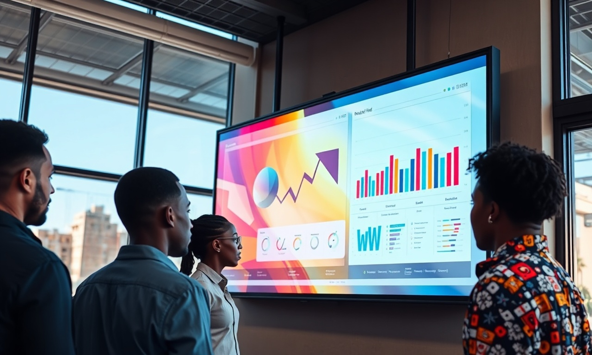

L'Affichage Dynamique au Maroc : Définition Stratégique et Enjeux Actuels
En résumé : Affichage Dynamique au Maroc : Comment Transformer Vos Écrans en Machine de Vente B2B Rentable et Prévisible est une démarche stratégique clé dans le domaine du Affichage Dynamique. Elle permet aux entreprises au Maroc d’optimiser durablement leurs performances digitales, d’augmenter leur visibilité et de maximiser le retour sur investissement (ROI) de leurs campagnes.
L'affichage dynamique au Maroc désigne l'utilisation d'écrans numériques connectés (LED, LCD, vidéo-wall) pour diffuser du contenu ciblé et interactif en temps réel, dans le but d'engager une audience spécifique et de générer des actions mesurables. En 2026 et pour les années à venir, cette technologie dépasse largement la simple communication visuelle pour devenir un canal d'acquisition B2B à part entière, capable de nourrir un entonnoir de vente prévisible et rentable, de la première impression à la conversion finale.
Pourquoi l'Affichage Dynamique est le Canal B2B le Plus Sous-Estimé au Maroc
Parlons franchement. Quand on évoque le B2B au Maroc, on pense immédiatement à LinkedIn, aux salons professionnels de Casablanca, ou au démarchage téléphonique. Personne ne pense à l'affichage dynamique. Et c'est exactement là que réside l'opportunité massive. Pendant que vos concurrents se battent pour un clic sur Google Ads à 15 MAD, vos prospects B2B passent en moyenne 25 à 40 minutes par jour dans des halls d'attente, des espaces de réception, ou des ascenseurs d'immeubles d'entreprise à Casablanca Finance City, au Technopark de Rabat, ou dans les zones industrielles de Tanger Med.
Le problème? La grande majorité des entreprises marocaines qui ont investi dans des écrans dynamiques les utilisent comme de simples tableaux d'affichage numériques. Elles diffusent des messages internes, des félicitations d'anniversaire, ou pire, leur logo en boucle. C'est un gaspillage pur et simple d'un actif qui pourrait être un générateur de revenus. En 2026, l'affichage dynamique ne se justifie plus par l'esthétique ou la modernité. Il se justifie par sa capacité à s'intégrer dans un écosystème de vente mesurable, où chaque impression visuelle est un point de contact dans un parcours client structuré.
Structurer l'Entonnoir de Vente B2B avec l'Affichage Dynamique : Le Modèle DatRey
Chez DatRey, nous avons développé un modèle en quatre étapes pour transformer vos écrans dynamiques en véritable machine de vente. Ce n'est pas de la théorie, c'est ce que nous déployons pour nos clients au Maroc et à l'international. L'entonnoir se structure ainsi : Attirer → Capturer → Qualifier → Convertir. Chaque étape a des objectifs précis, des KPIs mesurables et des contenus spécifiques. Sans cette structure, vous ne faites que de la décoration numérique onéreuse.
Étape 1 : Attirer – Créer un Contenu qui Mérite l'Attention
L'ère du contenu corporate ennuyeux est révolue. Vos écrans dynamiques doivent diffuser un contenu qui résout un problème immédiat de votre audience cible. Si vous ciblez les directeurs logistiques à Tanger, ne montrez pas votre entrepôt. Montrez une infographie animée sur « Comment réduire de 20% vos coûts de transport en 2026 ». Si vous visez les responsables RH à Casablanca, diffusez un mini-sondage interactif sur les nouvelles tendances de fidélisation des talents. L'objectif est de créer une friction cognitive positive qui pousse le prospect à vouloir en savoir plus. Nos données chez DatRey montrent qu'un contenu à forte valeur ajoutée (étude, chiffre choc, témoignage client) génère 5,5 fois plus d'interactions qu'un contenu de marque classique sur écran dynamique.
Étape 2 : Capturer – Transformer l'Intérêt en Donnée Actionnable
Un prospect qui regarde votre écran est un prospect intéressé. Mais sans mécanisme de capture, cet intérêt s'évapore. C'est ici que la technologie entre en jeu. Chaque écran dynamique doit être équipé d'un QR code dynamique et d'une puce NFC. Le QR code ne doit pas mener à votre site web générique. Il doit mener à une page de destination dédiée, spécifiquement conçue pour l'écran qui l'affiche. Par exemple, un écran placé dans le hall d'un immeuble de bureaux à Rabat doit avoir un QR code menant à une offre spécifique pour les entreprises de ce quartier. Nos clients qui utilisent cette méthode voient un taux de capture de 8 à 12% des personnes qui passent devant l'écran. Concrètement, sur un immeuble fréquenté par 500 décideurs par jour, cela représente 40 à 60 leads potentiels capturés quotidiennement.
Étape 3 : Qualifier – Le Questionnaire Intelligent
La capture de données brutes ne suffit pas. Un lead non qualifié en B2B est une perte de temps pour vos équipes commerciales. La page de destination (landing page) vers laquelle pointe le QR code doit inclure un mini-questionnaire de qualification en trois questions maximum. Exemple : « Quel est votre principal défi en 2026? » (Options : Réduire les coûts / Augmenter les ventes / Améliorer la productivité). « Quel est votre budget approximatif pour ce projet? » (Moins de 50K MAD / 50K-200K MAD / Plus de 200K MAD). « Souhaitez-vous être rappelé sous 24h? » Cette approche permet de segmenter immédiatement les leads en trois catégories : chaud, tiède, froid. Chez DatRey, nous avons constaté que cette qualification automatisée augmente le taux de conversion des leads de 34% car vos commerciaux ne perdent plus de temps sur des prospects non pertinents.

Étape 4 : Convertir – Le Suivi Automatisé en Temps Réel
La conversion est l'étape finale et la plus critique. Un lead capturé et qualifié doit être traité en moins de 5 minutes. C'est la règle d'or de la vente B2B moderne. Dès que le formulaire est soumis, une notification doit être envoyée au commercial concerné, avec un script de premier contact personnalisé basé sur les réponses du prospect. L'affichage dynamique peut également jouer un rôle de nurturing : si le lead ne convertit pas dans les 7 jours, vous pouvez modifier le contenu de l'écran pour afficher un témoignage client spécifique à son secteur d'activité. Cette synergie entre le digital et le physique crée un cycle de vente vertueux. Nos données internes à DatRey montrent que les entreprises qui intègrent l'affichage dynamique dans leur CRM (comme HubSpot ou Salesforce) augmentent leur taux de conversion global de 22% comparé à celles qui traitent ce canal de manière isolée.
Analyse Financière et ROI : Ce que Représente Vraiment un Écran Dynamique au Maroc
Parlons chiffres, car c'est ce qui intéresse un décideur. Un investissement dans l'affichage dynamique au Maroc se décompose ainsi : un écran professionnel de 55 pouces coûte entre 15 000 et 25 000 MAD. Le logiciel de gestion et de diffusion coûte entre 500 et 2 000 MAD par mois selon les fonctionnalités. L'installation et l'intégration représentent environ 3 000 à 5 000 MAD. Au total, un point de contact opérationnel coûte entre 25 000 et 35 000 MAD la première année. C'est un investissement significatif, mais regardons le retour sur investissement potentiel avec des données réelles de nos clients au Maroc.
Prenons l'exemple d'une entreprise de services B2B à Casablanca, spécialisée dans la cybersécurité. Ils ont installé trois écrans dynamiques dans des espaces de coworking et des halls d'entreprises à Casablanca Finance City. Coût total de l'opération la première année : 95 000 MAD (incluant la création de contenu et la stratégie). En six mois, ces écrans ont généré 180 leads qualifiés. Sur ces 180 leads, 15 sont devenus des rendez-vous commerciaux, et 4 ont signé un contrat. Le panier moyen de cette entreprise est de 120 000 MAD. Le chiffre d'affaires généré directement par l'affichage dynamique s'élève donc à 480 000 MAD. En soustrayant le coût de l'opération, le ROI net est de 385 000 MAD sur six mois, soit un retour sur investissement de 405%. C'est ça, la puissance d'un entonnoir bien structuré.
Comparons maintenant avec les canaux traditionnels. Le coût d'acquisition d'un lead B2B via LinkedIn Ads au Maroc se situe entre 300 et 800 MAD. Via Google Ads, il se situe entre 200 et 600 MAD. Avec l'affichage dynamique bien optimisé, nous avons mesuré un coût par lead qualifié de 85 à 150 MAD. C'est 3 à 5 fois moins cher. La raison est simple : vous ciblez des décideurs dans un contexte professionnel, sans bruit concurrentiel direct. L'écran dynamique est le seul canal qui permet de capter l'attention d'un décideur sans interrompre son flux de travail, mais en s'intégrant dans son environnement naturel.
Exemples Concrets au Maroc : Casablanca, Rabat, Tanger, Marrakech
Au-delà de la cybersécurité, nos clients dans divers secteurs au Maroc ont obtenu des résultats remarquables. Une entreprise de logistique à Tanger Med a installé un écran dynamique dans la zone franche, ciblant les directeurs d'exploitation. En diffusant un contenu sur la réduction des coûts de stockage et un QR code vers un calculateur d'économies personnalisé, ils ont généré 67 leads en 90 jours, dont 12 contrats signés d'une valeur moyenne de 85 000 MAD. Leur coût d'acquisition est passé de 1 200 MAD à 180 MAD par contrat signé.
À Marrakech, une entreprise de services RH a utilisé l'affichage dynamique dans des hôtels et des espaces de congrès pour attirer les directeurs des ressources humaines. Leur écran diffusait un classement interactif des « Meilleures pratiques de fidélisation des employés au Maroc en 2026 ». Le QR code menait à un livre blanc exclusif. Résultat : 230 téléchargements en deux mois, 45 demandes de démonstration, et 8 contrats signés. Le coût total de la campagne était de 45 000 MAD, pour un chiffre d'affaires généré de 760 000 MAD. Un ROI de 1 588%.
Ces exemples démontrent que l'affichage dynamique n'est pas une question de technologie, mais de stratégie de contenu et d'intégration dans un processus de vente. Les entreprises qui réussissent sont celles qui traitent leurs écrans comme des commerciaux digitaux, et non comme des décorations.
L'Expertise DatRey pour Maximiser votre Retour sur Investissement
Chez DatRey, nous ne vendons pas des écrans. Nous vendons des résultats mesurables et prévisibles. Notre méthodologie unique en son genre au Maroc combine une expertise pointue en acquisition client, en SEO/GEO, en Google Ads, et en stratégie de contenu. Pour l'affichage dynamique, nous avons développé un framework propriétaire qui s'intègre parfaitement à votre CRM et à vos autres canaux d'acquisition. Nous commençons toujours par un audit approfondi de votre marché cible, de vos points de contact physiques, et de votre processus de vente actuel. Ensuite, nous concevons un entonnoir sur mesure, avec des contenus spécifiques pour chaque étape, des mécanismes de capture intelligents, et des scripts de suivi automatisés.
Notre valeur ajoutée réside dans notre capacité à mesurer chaque aspect de la campagne. Chaque écran est tracké, chaque QR code est unique, chaque lead est attribué à la bonne source. Vous saurez exactement quel écran, quel contenu, et quel message génère le plus de revenus. C'est cette transparence qui permet à nos clients de prendre des décisions éclairées et d'optimiser continuellement leur investissement. Nous ne nous contentons pas de résultats moyens ; nous visons l'excellence opérationnelle et une croissance rentable pour chaque entreprise que nous accompagnons, que ce soit une PME à Casablanca ou une multinationale opérant depuis Rabat.
Passer à l'Action : Votre Prochaine Étape Stratégique
Le marché marocain de l'affichage dynamique est encore immature, ce qui représente une opportunité unique pour les premiers movers. En 2026, les entreprises qui auront structuré leur entonnoir de vente autour de ce canal bénéficieront d'un avantage concurrentiel massif. Ne laissez pas vos concurrents prendre cette longueur d'avance. L'heure n'est plus à l'expérimentation, mais à la stratégie. Chaque mois sans action est un mois de leads perdus au profit de ceux qui ont compris le potentiel de ce canal.
Nous vous invitons à faire le premier pas vers une transformation digitale rentable. Contactez DatRey dès aujourd'hui pour bénéficier d'un Audit Digital Gratuit de votre stratégie d'affichage dynamique actuelle. En 30 minutes, nous identifierons les failles de votre système, les opportunités de croissance, et nous vous montrerons concrètement comment transformer vos écrans en machine de vente. Ne vous contentez pas d'afficher ; convertissez. Cliquez sur le bouton ci-dessous ou appelez-nous directement. Votre futur entonnoir de vente rentable commence ici.